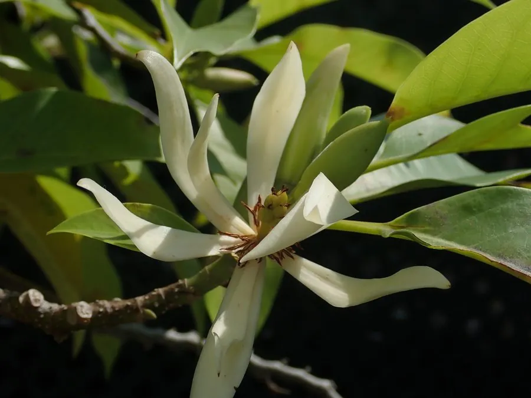

乔木 · 植物界
白兰 Michelia alba

原产东南亚的常绿乔木，花朵洁白、香气浓郁持久，是著名的香花树种，花可提取精油与窨制花茶。
- 分类
- 门被子植物门纲木兰纲目木兰目科木兰科属含笑属
- 栖息环境
- 海拔 800 米以下的热带亚热带地区，喜高温多湿
- 地理分布
- 原产印度尼西亚、马来西亚等地，中国华南地区栽培
- 保护级别
- 暂无评估；中国未列入国家重点保护野生植物名录
物种志
白兰为常绿乔木，高可达 20 m，树干通直，树皮灰褐色；叶片互生，长椭圆形，薄革质，表面深绿有光泽。花期 4–10 月，花单生于叶腋，花被片 6–9 枚、白色，花瓣狭长，香气浓郁持久；聚合蓇葖果穗状，成熟时开裂，种子红色，栽培条件下少见结实。
白兰原产印度尼西亚、马来西亚等东南亚地区，中国广东、广西、福建、云南、海南等地栽培，喜高温多湿、光照充足，适宜深厚肥沃的酸性土壤，不耐寒。花朵洁白芳香，是著名的香花树种，可提取白兰精油、窨制花茶与制作胸花；树形优美，常作为行道树与庭园树。白兰与黄兰外形相似，但白兰花朵白色、香气较清雅，黄兰花朵橙黄色、香气更浓。
形态与习性
- 株高可达 20 m，树干通直
- 花期4–10 月，花白色芳香
- 果期栽培条件下少见结实
- 光照喜光，不耐长期荫蔽
- 水分喜湿润，怕积水
- 主要用途香花树种、提取精油、窨制花茶、行道树
趣味知识
- 白兰的花朵洁白、香气浓郁，一朵花就能让满院飘香。
- 白兰的花可提取精油，也可窨制花茶或制作胸花。
- 白兰原产东南亚，中国华南地区常见栽培，是著名的香花树种。